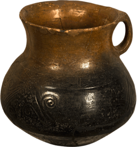
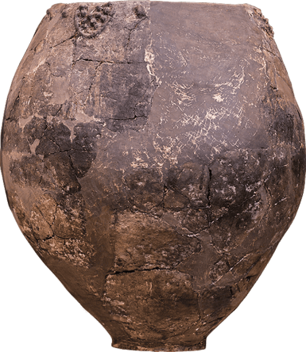
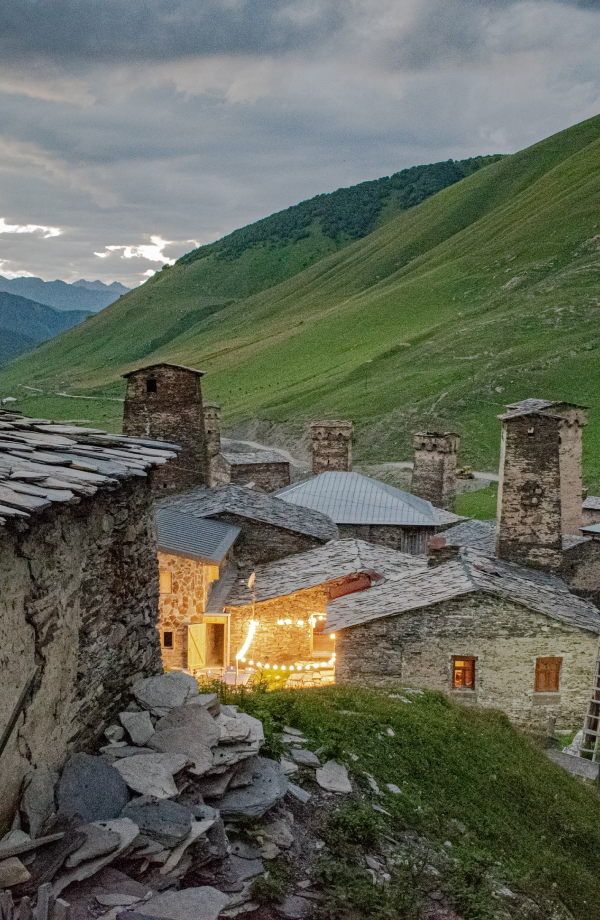

<!DOCTYPE html>
<html lang="en">
  <head>
    <meta charset="UTF-8" />
    <meta http-equiv="X-UA-Compatible" content="IE=edge" />
    <meta name="viewport" content="width=device-width, initial-scale=1.0" />
    <link rel="stylesheet" href="./css/main.css" />
    <title>Document</title>
  </head>
  <body>
    <header class="black">
      <div class="line">
        <a href="index.html"> <h1>KARTVELI</h1></a>
        <button id="nav">MENU</button>
      </div>
      <nav id="navbar">
        <ul>
          <li class="empty-li"></li>
          <li class="empty-li"></li>
          <li class="empty-li"></li>
          <li class="empty-li"></li>
          <li class="empty-li"></li>
          <li class="empty-li"></li>
          <li><a href="index.html">HOME</a></li>
          <li><a href="blog.html">BLOG</a></li>
          <li><a href="history.html">HISTORY</a></li>
          <li><a href="strategy.html">STRATEGY</a></li>
          <li><a href="brands.html">OUR BRANDS</a></li>
          <li><a href="estate.html">ESTATE</a></li>
        </ul>
        <div class="flex space-between nav-bottom align-center">
          <div class="flex align-center">
            
            
            
            <a href="contact.html" class="pl-2">CONTACT</a>
          </div>
          <div>
            <a href="#">EN</a>
            <a href="#">GE</a>
          </div>
        </div>
      </nav>
    </header>

    <section class="container history-1">
      <h1>Georgia - the cradle of civilization</h1>
      
      <p>
        Georgia is a country with a rich culture and history. The oldest wine
        samples were found on the modern territory of Georgia, which dates back
        to 8000 years, therefore, the culture of wine in the world has spread
        from Georgia.
      </p>
    </section>
    <section class="container history-2">
      
    </section>
    <section class="container history-3">
      <div class="left">
        
      </div>
      <div class="right">
        <p>
          Georgia, with diverse landscape and climatic zones, is distinguished
          by the existence of about 500 endemic grape varieties. Grape varieties
          differ from one another in terms of regions and micro-zones. The
          following regions may be distinguished due to their wine
          characteristics: Kakheti, Kartli, Meskheti, Imereti, Racha-Lechkhumi,
          and the Black Sea.Georgia is one of the richest countries in water
          resources. Water plays a significant role in the production of certain
          spirits. Georgian whiskey, chacha, and brandy enriched with Caucasian
          water have a special taste.
        </p>
      </div>
    </section>
    <section class="container history-4">
      <div class="left">
        <p>
          The history of the oldest honey in the world is connected with Georgia
          and dates back to 5500 years. Georgian unique honey is actively used
          in making vodka.
        </p>
        <p>
          It is quite natural to gather these important events or artifacts in
          one small country, considering the fact that the discovery of ancient
          people in Eurasia is related to the modern territory of Georgia and
          dates back to 1,800,000 years.
        </p>
      </div>
      <div class="right">
        
      </div>
    </section>
    <section class="half-container history-5"></section>
    <section class="half-container history-6">
      <h2>Chkhaidze Family Tree</h2>
    </section>
    <section class="double-container history-7">
      <h3>
        From left to right; Jimsher CHKHAIDZE; ZURAB CHKHAIDZE; GOCHA CHKHAIDZE
      </h3>
      <p>
        The etymology of Georgian surnames is often connected with various
        historical events, conditions,origins ... The surname Chkhaidze is
        connected with the grape «Chkha» as well as with the sun. Chkhaidze is
        also mentioned as the savior of Georgian grapes and is related to the
        following wine varieties: «Chkhaveri»; «Chkhaberdzula». Jimsher
        Chkhaidze’s ancestor, Antimoz Chkhaidze, was from the village of Askani
        in Guria. Since 1882 he has been mentioned as a special winemaker who
        tried to take his name outside the borders of Georgia. Constantine, the
        youngest son, tried to continue his work and passed on the tradition of
        making wine as a relay to his grandchildren: Gocha, Zurab, and Jimsher.
        Thus, Jimsher Chkhaidze is a representative of the fourth generation of
        the family of great traditional winemakers.
      </p>
    </section>
    <section class="half-container history-6">
      <h2>JIMSHER CHKHAIDZE</h2>
    </section>
    <section class="double-container history-8"></section>
    <section class="quarter-container history-9">
      <h2>JIMSHER CHKHAIDZE</h2>
    </section>
    <section class="double-container history-10">
      <div class="left">
        <p>
          He was born on January 3, 1975. He grew up in the old part of Tbilisi,
          on Mtatsminda, with his parents and two older brothers. Actively
          playing rugby as a teenager, he was twice the «best rugby player of
          the year» within the Soviet Union. At the age of sixteen, he decided
          to live independently and left for St. Petersburg.
        </p>
      </div>
      <div class="right"></div>
      <div class="left"></div>
      <div class="right">
        <p>
          In 1998, together with the brothers, he founded the company «Askaneli
          Brothers». In 2005 he started thinking about what Georgian whiskey
          should be like and only in 2017 did he set the first Georgian whiskey
          in production - Jimsher. In 2015, he founded the company
          «Kartveli&quot» which later became the unifying hub of many projects.
        </p>
      </div>
      <div class="left">
        <p>
          Jimsher, in addition to business, has always been interested in music
          ... Although he did not have a professional musical education, he has
          created many musical works, which have been performed in various
          concert halls around the world, including Paris (LES INVALIDES, LES
          INVALIDES) and St. Petersburg ( Dmitry Shostakovich Philharmonic,
          Great Hall).
        </p>
      </div>
    </section>

    <section class="container history-11"></section>
    <section class="quarter-container">
      <p>HUB KARTVELI</p>
    </section>
  </body>
  <script
    src="https://cdnjs.cloudflare.com/ajax/libs/jquery/3.6.0/jquery.min.js"
    integrity="sha512-894YE6QWD5I59HgZOGReFYm4dnWc1Qt5NtvYSaNcOP+u1T9qYdvdihz0PPSiiqn/+/3e7Jo4EaG7TubfWGUrMQ=="
    crossorigin="anonymous"
    referrerpolicy="no-referrer"
  ></script>
  <script src="./js/index.js"></script>
</html>
